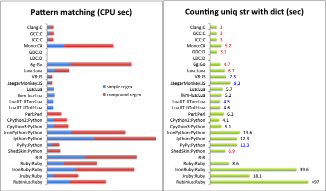
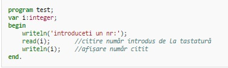
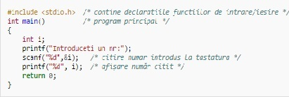
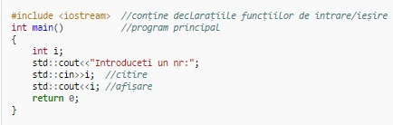
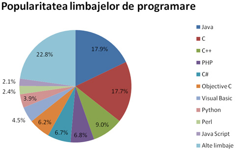

Comparație
Limbajul de programare C++ a fost inițial derivat din C. Totuși, nu absolut orice program scris în C este valid C++. Deoarece C și C++ au evoluat independent, au apărut, din nefericire, o serie de incompatibilități între cele două limbaje de programare.
Cea mai amplă revizie a limbajui C, C99, a creat un număr suplimentar de conflicte. Diferențele fac să fie greu de scris programe și biblioteci care să fie compilate și să ruleze corect în calitate de cod C sau C++, și produce confuzii celor care programează în ambele limbaje. Diferențele fac ca fiecare din cele două limbaje de programare să împrumute din caracteristicile celuilalt limbaj de programare.
Bjarne Stroustrup, creatorul limbajului C++, a sugerat de nenumărate ori [2] să se reducă incompatibilitățile pe cât de mult posibil pentru a maximiza interoperabilitatea dintre cele două limbaje de programare. Unii au argumentat că C și C++ sunt două limbaje de programare distincte, compatibilitatea dintre ele fiind utilă dar nu vitală; potrivit acestei opinii, eforturile de a reduce incompatibilitatea nu trebuie să reducă eforturile de a aduce elemente noi în mod independent celor două limbaje de programare.
Cele mai importante diferențe sunt:
inline —funcțiile inline apar în secțiunea de declarare a variabilelor globale în C++, iar in C acestea apar în așa zisele „fișiere statice“.
-
Cuvântul cheie bool are în C99 propriul său header,
. În variantele anterioare de C tipul de date boolean nu era definit, în schimb erau folosite o serie de metode (incompatibile) pentru a simula acest tip de date. Constantele caracter (cuprinse între apostrofuri) au dimensiunea unui int în C și char în C++. Cu alte cuvinte, în C, sizeof('a') == sizeof(int); în C++, sizeof('a') == sizeof(char). Chiar și în aceste condiții, valoarea acestui tip de constante nu va depăși valoarea maximă ce poată fi păstrată de char, deci o conversie de genul (char)'a' este sigură.
Cuvinte cheie suplimentare au fost introduse în C++, deci acestea nu pot fi folosite ca identificatori așa cum ar putea fi folosite în C. (de exemplu, code>try, catch, template, new, delete, ...)
În C++, compilatorul creează automat o „etichetă“ pentru orice structură (struct), uniune (union) sau enumerație (enum), astfel încât struct S {}; în C++ este echivalent cu typedef struct S {} S; în C.
C99 a adoptat unele funcționalități ce au apărut inițial în C++. Printre acestea se enumeră:
Declararea obligatorie a prototipului funcțiilor
Cuvântul cheie inline
Eliminarea variabilei implicite int ca valoare de întoarcere.
| Sintaxa Pascal | Sintaxa C și C++ | Explicații |
| begin | { | Început bloc de instrucțiuni |
| end. / end | } | Sfârșit bloc de instrucțiuni |
| if (
|
if(
|
Instrucțiune condițională:
|
| while(
|
while(
|
Repetă cat timp
|
| a<> b | a!=b | Valoarea variabilei a e diferită de valoarea variabilei b |
| for i:=1 to n do | for(i=1;i<=n;i++) | Buclă (ciclu) for: se va repeta până la verificarea condiției de ieșire din ciclu (valoarea variabilei i egale cu cea a lui n) |
| i:=a; | i=a; | Atribuire: în locația de memorie corespunzătoare variabilei i se copiază valoarea din locația lui a |
| i:=i+1 sau inc(x); | i++; | Incrementare |
| i:=i-1 | i--; | Decrementare |
| var i: integer | int i; | Declarare variabilă (în C++ și C99 se poate declara oriunde în program/funcție) |
| if(a=b) then | if(a==b) | Dacă a egal cu b |
| read(var); | scanf("%s", &var); | Citire de la intrarea standard (de obicei tastatură) |
| write('text ', var); | printf("text %s", var); | Scriere la ieșirea standard (de obicei ecran) |
| writeln; | printf("\n"); | Tipărește o linie nouă |
Exemplu
Un program care citește un număr întreg și îl afișează.
-
Pascal:
 -
C:
 -
C++:

Vezi și ...
Comparație
Limbajul de programare C++ a fost inițial derivat din C. Totuși, nu absolut orice program scris în C este valid C++. Deoarece C și C++ au evoluat independent, au apărut, din nefericire, o serie de incompatibilități între cele două limbaje de programare.
Cea mai amplă revizie a limbajui C, C99, a creat un număr suplimentar de conflicte. Diferențele fac să fie greu de scris programe și biblioteci care să fie compilate și să ruleze corect în calitate de cod C sau C++, și produce confuzii celor care programează în ambele limbaje. Diferențele fac ca fiecare din cele două limbaje de programare să împrumute din caracteristicile celuilalt limbaj de programare.
Limbaje de programare de viitor
Domeniul IT este unul foarte dinamic, in continua dezvoltare, care ofera numeroase oportunitati de angajare. Pentru a veni in ajutorul tinerilor care isi doresc sa lucreze in domeniul IT, dar si a specialistilor care sunt interesati de evolutia pietei, HiPo.ro a realizat o analiza a tendintelor privind utilizarea diferitelor limbaje de programare.
In prezent, cele mai populare 10 limbaje de programare sunt: Java, C, C++, PHP, C#, Objectiv C, Visual Basic, Python, Perl si Java Script. In graficul de mai jos poti vedea detalii legate de ponderea fiecarui limbaj de programare in ceea ce priveste popularitatea sa in randul specialistilor din domeniul IT din intreaga lume, a locurilor de munca disponibile, precum si a ofertelor de cursuri de specializare.